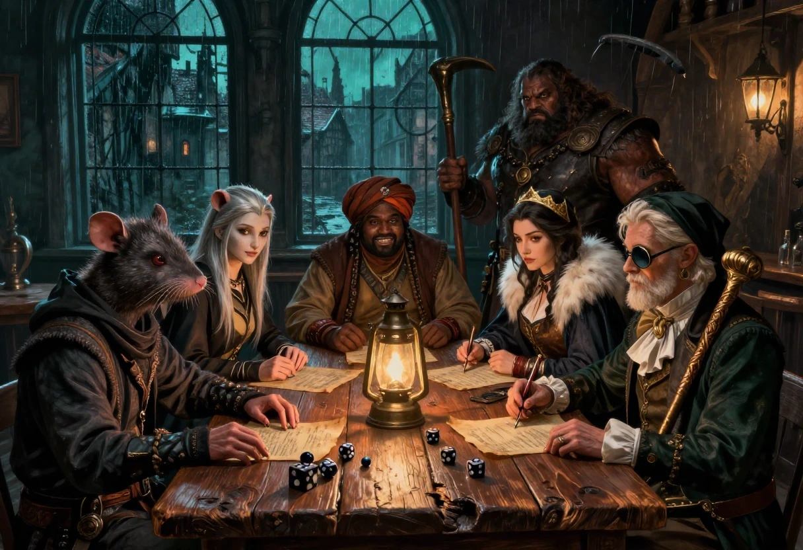

Une feuille de personnage ne dit pas qui est le personnage. Elle dit ce qu'il sait faire, ce qu'il risque de rater et ce qu'il porte sur lui quand la nuit tourne mal. Le reste vient à la table, dans la façon de parler, d'hésiter et de mentir.
Voici six figures prêtes à jouer. Albert Degreffion vient des personnages types conservés avec les aides de jeu du site de l'auteur. Les cinq autres viennent du scénario écrit pour la quinzième convention des Alchimistes, en 2011, sur le thème « vapeur et boulons ». J'ai repris les noms, les valeurs et les équipements, et j'ai réécrit les portraits et les conseils de jeu. Aucune de ces fiches n'est une reproduction : c'est ma version normalisée, celle que je pose sur la table quand un joueur arrive sans personnage.
Trois remarques avant les tableaux. Les scores sont ceux de la première édition, version 1.3 simplifiée. Les compétences sont données telles qu'elles figurent sur les feuilles d'origine, sans l'addition de la caractéristique de base : le meneur applique les modificateurs du livre de base. Enfin, la ligne des armes conserve la notation d'origine, avec la compétence, les valeurs de l'arme et le malus éventuel.
Albert Degreffion, dit Sir Albert de Greffion nième du nom, dit aussi le Noble Dé Chu, est un Umélorien de trente-trois ans, agitateur, origine sociale -1. Il prend un malin plaisir à ridiculiser les gens, et il le fait bien : Élocution 20, Discours 20, Comédie 16. Sa parole captive une foule, surtout quand il tourne en dérision un fait, une attitude ou un noble. Très théâtral, il ne peut pas s'empêcher d'ajouter à ses discours des habits, des gestes, des comparses et du public.
Il rêve de monter une troupe de troubadours qui dénoncerait, par le spectacle et de manière détournée, les dessous de table de l'aristocratie umélorienne et de tous ceux qui se prétendent nobles sans l'être. C'est son grand dessein : dénoncer les injustices et les actes indignes du rang. Il remet sans cesse en question les privilèges de la noblesse, en se prenant lui-même en exemple. Pourquoi ne serait-il pas noble, si la cour princière accepte des individus tels que certains qu'il ne nomme pas ?
Fils d'une aventure d'un soir, il n'a jamais été reconnu par son père, qu'il ne connaît pas et recherche. Sa mère, noble Dame à la cour, l'a abandonné bébé : un fardeau trop lourd pour son amour-propre et son statut. Il s'habille en noble mal fagoté, ce qui renforce l'aspect théâtral du personnage.
| Rubrique | Valeurs |
|---|---|
| Identité | Albert Degreffion, dit Sir Albert de Greffion nième du nom, dit le Noble Dé Chu. Umélorien, homme, 33 ans, agitateur, origine sociale -1. |
| Caractéristiques | Adresse 11, Agilité 8, Beauté 10, Courage 16, Élocution 20, Endurance 11, Force 11, Mémoire 13, Morale 15, Perception 10, Rapidité 12, Initiative 3, Santé 16, Fatigue 16. |
| Voleur | Camouflage 5, Crochetage 5, Discrétion 4, Dissimulation 5, Escamotage 6, Filature 5, Repérage 5. |
| Relations | Baratin 12, Comédie 16, Déguisement 14, Discours 20, Étiquette 14, Intimidation 8, Jeu 5, Marchandage 10, Séduction 9. |
| Physique | Acrobatie 10, Contorsion 4, Course 13, Escalade 4, Nage 5. |
| Combat | Arme à deux mains 5, Arme d'hast 5, Bouclier 5, Épée 5, Fléau 5, Hache et masses 5, Poignard 5, Dague 5, Fléchettes 5, Hachette 5, Javelot 5, Armure 5, Esquive 6, Arbalète 5, Arc 5, Lance-pierres 5, Fronde 5, Pugilat 5. |
| Connaissances | Bricolage 5, Chimie 6, Commerce 9, Politique 14, Loi 10, Dressage 5, Évaluation 5, Falsification 5, Premiers secours 6. |
| Armes | Stylet, compétence 5. Canne de bois finement ouvragée, compétence 5 si l'on s'en sert pour frapper. |
| Équipement | Une garde-robe de nobles, un habit de marchand, des habits de pauvre et divers costumes, un stylet, un monocle, une canne de bois finement ouvragée. |
| En jeu | Albert n'est pas un combattant. C'est une voix, une présence et un culot. Il ouvre les portes par le discours, retourne une foule, ridiculise un garde et se sort d'un mauvais pas en faisant rire. Sa canne est gravée de scènes qui disent tout haut ce que la ville pense tout bas. Il paie en promesses, en couronnes et en spectacles. |
K'rëtrr est un gouri rat de vingt-deux ans, cambrioleur, origine sociale -3. Il postillonne en parlant, sa voix chevrote et ses longs ongles font de lui un crocheteur hors pair : Crochetage 16, Camouflage 14, Discrétion 14. Adresse 17, Perception 15, il voit ce que les autres laissent traîner. Il tremble lorsqu'il manque de son « boniment des fous » depuis quarante-huit heures, avec un accès de manque à 12 et la Fatigue réduite de moitié.
En jeu, c'est l'ouvreur de portes. Il entre par les toits, les fenêtres et les caves, et il repart avec ce qu'il faut. Son Courage 9 et sa Morale -2 le rendent prudent jusqu'à la lâcheté : il n'attaque pas de face. Il frappe à la dague ou à la fronde, et il court.
| Rubrique | Valeurs |
|---|---|
| Identité | K'rëtrr. Gouri rat, homme, 22 ans, cambrioleur, origine sociale -3. |
| Caractéristiques | Adresse 17, Agilité 12, Beauté 6, Mémoire 11, Courage 9, Élocution 6, Endurance 9, Force 12, Rapidité 9, Perception 15, Morale -2, Initiative 3, Santé 16, Fatigue 15. Pécule : 0 couronne d'or, 5 d'argent, 12 de cuivre. |
| Voleur | Camouflage 14, Crochetage 16, Discrétion 14, Dissimulation 11, Escamotage 7, Filature 10, Repérage 11. |
| Relations | Baratin 5, Comédie 6, Déguisement 9, Étiquette 9, Intimidation 10, Jeu 7, Marchandage 6, Séduction 4, Discours 4. |
| Physique | Acrobatie 10, Contorsion 10, Course 11, Escalade 12, Natation 5, Pugilat 11, Armure 7, Esquive 12, Saut 8. |
| Connaissances | Bricolage 13, Chimie 9, Commerce 8, Dressage 9, Évaluation 12, Falsification 7, Loi 7, Politique 6, Premiers secours 5. |
| Armes | Dague : 14, 1/1d4-1, -1. Fronde : 13, 1d4+2, -2. |
| Équipement | Vêtements de ville miteux, passe-partout, diamant de vitrier, pied-de-biche, grand sac de cuir, lanterne dirigée, dague, fronde. |
| Traits | Postillonneur, vultueux, tremblements, voix chevrotante, longs ongles, doigts de fée. |
S'rhie est une gouri rat et gerboise de dix-neuf ans, monte-en-l'air, origine sociale -3. Efflanquée, albinos, elle tape du pied, a la voix aiguë et un rire sardonique. Elle dort dix à douze heures quand elle peut, voit mal dans la lumière et bien dans l'obscurité, avec un malus de 5 le jour et un bonus de 5 la nuit. Ses guibolles de gerboise lui donnent une détente exceptionnelle : Acrobatie 18, Escalade 18, Saut 19, Agilité 18, Rapidité 16. Elle rend les chiens nerveux et a un grain de folie.
En jeu, c'est la grimpeuse. Elle passe là où K'rëtrr hésite, et son poignard ne sort qu'en dernier recours. Son Courage 8 et sa Force 9 la poussent à éviter le corps à corps ; son Esquive 15 et sa Course 16 la sauvent.
| Rubrique | Valeurs |
|---|---|
| Identité | S'rhie. Gouri rat et gerboise, femme, 19 ans, monte-en-l'air, origine sociale -3. |
| Caractéristiques | Adresse 15, Agilité 18, Beauté 7, Mémoire 9, Courage 8, Élocution 6, Endurance 10, Force 9, Rapidité 16, Perception 12, Morale -1, Initiative 1, Santé 14, Fatigue 14. Pécule : 2 couronnes d'or, 8 d'argent, 13 de cuivre. |
| Voleur | Camouflage 15, Crochetage 15, Discrétion 13, Dissimulation 11, Escamotage 9, Filature 9, Repérage 12. |
| Relations | Baratin 4, Comédie 6, Déguisement 5, Étiquette 9, Intimidation 5, Jeu 5, Marchandage 5, Séduction 6, Discours 4. |
| Physique | Acrobatie 18, Contorsion 13, Course 16, Escalade 18, Natation 5, Pugilat 8, Armure 7, Esquive 15, Saut 19. |
| Connaissances | Bricolage 10, Chimie 8, Commerce 6, Dressage 7, Évaluation 12, Falsification 7, Loi 6, Politique 5, Premiers secours 5. |
| Armes | Poignard : 13, 1/1d4-2, -1. |
| Équipement | Vêtements de ville miteux, passe-partout, grand sac de cuir, grappin et 20 mètres de corde, poignard. |
| Traits | Efflanquée, tape du pied, voix aiguë et rire sardonique, besoin de sommeil de 10 à 12 heures, albinos gerboise, détente exceptionnelle, grain de folie, rend les chiens nerveux. |
Elyr Djedorath est un Khaler de trente et un ans, contrebandier, origine sociale -2. Tendance à l'embonpoint, taquin, rire franc, expression enjouée, bon vivant, gourmand et vantard. Il sait lire et écrire, ce qui le distingue de la moitié de la rue, et il a des contacts dans les guildes et chez les marchands : Commerce 16, Marchandage 17, Baratin 16, Évaluation 15, Élocution 17.
En jeu, c'est la façade. C'est lui qui parle aux douaniers, aux receleurs et aux marchands. Sa rapière est brisée, ce qui ne l'empêche pas de la porter ; il préfère le fouet et les bolas pour désarmer ou entraver. Adresse 11, Agilité 9, Force 11 : il n'est pas fait pour le duel, et il le sait.
| Rubrique | Valeurs |
|---|---|
| Identité | Elyr Djedorath. Humain khaler, homme, 31 ans, contrebandier, origine sociale -2. |
| Caractéristiques | Adresse 11, Agilité 9, Beauté 14, Mémoire 13, Courage 11, Élocution 17, Endurance 9, Force 11, Rapidité 10, Perception 13, Morale -1, Initiative 3, Santé 14, Fatigue 13. Pécule : 9 couronnes d'or, 1 d'argent, 3 de cuivre. |
| Voleur | Camouflage 9, Crochetage 6, Discrétion 9, Dissimulation 11, Escamotage 8, Filature 10, Repérage 12. |
| Relations | Baratin 16, Comédie 11, Déguisement 9, Étiquette 12, Intimidation 9, Jeu 8, Marchandage 17, Séduction 11, Discours 12. |
| Physique | Acrobatie 10, Contorsion 7, Course 11, Escalade 8, Natation 5, Pugilat 9, Armure 6, Esquive 13, Saut 7. |
| Connaissances | Bricolage 10, Chimie 8, Commerce 16, Dressage 6, Évaluation 15, Falsification 9, Loi 11, Politique 8, Premiers secours 9. |
| Armes | Rapière : 10, 2/1d6, -1. Fouet : 14, 1, -1. Bolas : 12. |
| Équipement | Vêtements bourgeois khaler, turban et jebba, matériel d'écriture, rapière brisée, bolas, fouet. |
| Traits | Tendance à l'embonpoint, taquin au rire franc et à l'expression enjouée, bon vivant, gourmand, vantard, sait lire et écrire, contacts dans les guildes et chez les marchands. |
Hironne Diêtre est une Umélorienne de vingt-sept ans, espionne, origine sociale -1. Cleptomane, sens de l'honneur, marquée du sceau de la prison princière, elle joue souvent avec sa pièce fétiche, joueuse invétérée, attitude maniérée. Elle porte une hermine relativement intelligente sur l'épaule et entretient des contacts dans la noblesse et la bourgeoisie. Beauté 16, Élocution 14, Perception 15, Filature 16, Repérage 17, Déguisement 16, Comédie 15, Étiquette 15, Séduction 15, Politique 14.
En jeu, c'est l'observatrice. Elle entre dans un salon par la porte, pas par la fenêtre, et elle en ressort avec une information plutôt qu'avec un objet. Sa cleptomanie est un défaut de caractère, pas une compétence : elle peut voler ce qu'elle ne devrait pas, au pire moment. Son stylet et sa matraque suffisent à la sortir d'un mauvais pas, mais son Esquive 13 et sa Discrétion 12 sont ses vraies défenses.
| Rubrique | Valeurs |
|---|---|
| Identité | Hironne Diêtre. Humaine umélorienne, femme, 27 ans, espionne, origine sociale -1. |
| Caractéristiques | Adresse 12, Agilité 11, Beauté 16, Mémoire 13, Courage 11, Élocution 14, Endurance 8, Force 8, Rapidité 12, Perception 15, Morale 1, Initiative 2, Santé 12, Fatigue 12. Pécule : 12 couronnes d'or, 21 d'argent, 13 de cuivre. |
| Voleur | Camouflage 15, Crochetage 6, Discrétion 12, Dissimulation 11, Escamotage 8, Filature 16, Repérage 17. |
| Relations | Baratin 13, Comédie 15, Déguisement 16, Étiquette 15, Intimidation 9, Jeu 11, Marchandage 8, Séduction 15, Discours 13. |
| Physique | Acrobatie 9, Contorsion 7, Course 11, Escalade 8, Natation 6, Pugilat 8, Armure 6, Esquive 13, Saut 10. |
| Connaissances | Bricolage 10, Chimie 10, Commerce 10, Dressage 13, Évaluation 13, Falsification 9, Loi 12, Politique 14, Premiers secours 10. |
| Armes | Stylet : 10, 1/1d4-2, -1. Matraque : 15, 1/1, F/2+1. |
| Équipement | Vêtements miteux, bourgeois ou de marchand, nécessaire de maquillage, parfum, matériel d'écriture, matraque, stylet. |
| Traits | Cleptomane, sens de l'honneur, marquée du sceau de la prison princière, pièce fétiche, joueuse invétérée, attitude maniérée, hermine de compagnie, contacts dans la noblesse et la bourgeoisie. |
Krieu'kr est un sang-mêlé gouri rat et taupe de dix-sept ans, détrousseur, origine sociale -3. Paranoïaque, forte odeur corporelle de sueur, myope comme une taupe avec un malus de 8 le jour, il se gratte fréquemment le flanc, où une blessure s'est infectée. Les Méloriens le poursuivent activement depuis une rixe meurtrière avec l'un des leurs. Force 19, Endurance 14, Santé 27, Fatigue 24, Pugilat 15, Intimidation 16, Armure 13, Esquive 13.
En jeu, c'est la masse. Il n'est pas rapide (Rapidité 11, Initiative 2), il ne voit pas loin (Perception 8), mais il encaisse et il frappe. Son fléau à 17 et sa hache à deux mains à 11 font de lui le dernier recours quand la négociation échoue. Son armure de cuir clouté lui donne -2,-2 au torse et aux jambes. Il faut le nourrir, le loger et le tenir à l'écart des patrouilles méloriennes.
| Rubrique | Valeurs |
|---|---|
| Identité | Krieu'kr. Sang-mêlé gouri rat et taupe, homme, 17 ans, détrousseur, origine sociale -3. |
| Caractéristiques | Adresse 11, Agilité 9, Beauté 6, Mémoire 7, Courage 9, Élocution 6, Endurance 14, Force 19, Rapidité 11, Perception 8, Morale -3, Initiative 2, Santé 27, Fatigue 24. Pécule : 0 couronne d'or, 9 d'argent, 22 de cuivre. |
| Voleur | Camouflage 7, Crochetage 6, Discrétion 8, Dissimulation 12, Escamotage 6, Filature 6, Repérage 9. |
| Relations | Baratin 8, Comédie 5, Déguisement 6, Étiquette 8, Intimidation 16, Jeu 6, Marchandage 7, Séduction 6, Discours 6. |
| Physique | Acrobatie 6, Contorsion 5, Course 10, Escalade 6, Natation 6, Pugilat 15, Armure 13, Esquive 13, Saut 10. |
| Connaissances | Bricolage 9, Chimie 8, Commerce 6, Dressage 7, Évaluation 7, Falsification 6, Loi 7, Politique 5, Premiers secours 6. |
| Armes | Fléau : 17, 4/F/2-1d6, F/2. Hache à deux mains : 11, 4, MF/1d6. |
| Équipement | Vêtements miteux, fléau, armure de cuir clouté -2,-2 au torse et aux jambes. |
| Traits | Paranoïaque, forte odeur corporelle de sueur, myope comme une taupe, blessure infectée au flanc, poursuivi par les Méloriens. |
Les cinq prétirés forment une équipe complète pour une soirée de convention : un ouvreur, une grimpeuse, une façade, une observatrice et une masse. Albert n'est pas de la bande. Il est le commanditaire, l'agitateur qu'on croise dans un salon et qui paie en promesses et en couronnes. Si vous jouez la campagne de Samarande, ces fiches peuvent servir de personnages joueurs autant que de figures de passage.
Les scores sont hauts, et c'est voulu : ce sont des personnages de convention, taillés pour tenir une soirée. Krieu'kr encaisse 27 points de santé et frappe comme un mulet ; Albert retourne une foule avec 20 en Élocution. Face à des gardes ordinaires, réduisez les compétences de ces derniers ou augmentez leur nombre, sinon la bande passera partout sans transpirer. Le plaisir de ces fiches n'est pas dans la puissance, il est dans les défauts : la cleptomanie d'Hironne, les tremblements de K'rëtrr, la myopie de Krieu'kr et la vanité d'Elyr font plus de scènes que leurs scores.
Une dernière remarque sur les noms. Les fiches d'origine écrivent K'rëtrr, S'rhie et Krieu'kr avec des apostrophes et des trémas qui ne survivent pas toujours au copier-coller. Je les ai gardés tels quels, parce qu'un nom de gouri qui siffle et claque vaut mieux qu'un nom propre lissé pour l'imprimerie.
Fiches normalisées à partir des personnages types conservés avec les aides de jeu du site de l'auteur pour Albert Degreffion, et des cinq prétirés du scénario de la quinzième convention des Alchimistes, en 2011, sur le thème « vapeur et boulons ». Les noms, les valeurs, les races, les âges et les équipements viennent des feuilles d'origine. Les portraits, les commentaires et les conseils de jeu sont réécrits pour cette édition. Aucune fiche tierce n'est reproduite. Version provisoire : plusieurs valeurs n'ont pas été retestées depuis la convention.